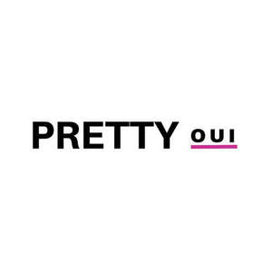

Trade Mark Journal No.2025/009 28 February 2025
UK00004162190 19 February 2025 (3,41)

- Class 3
- Cosmetic products for the shower; Cosmetic products in the form of aerosols for skincare; Cosmetics and cosmetic preparations; Cosmetic products in the form of aerosols for skin care; Sets of cosmetic oral care products; Cosmetic kits; Kits (Cosmetic -); Cosmetic soaps; Creams (Cosmetic -); Cosmetic creams; Lotions for cosmetic purposes; Suncare lotions [for cosmetic use]; Cosmetic moisturisers; Sunscreens [for cosmetic use]; Perfumery products; Dyes (Cosmetic -); Cosmetic dyes; Cosmetic facial lotions; Facial lotions [cosmetic]; Anti-aging creams [for cosmetic use]; Cosmetics; Skincare cosmetics; Cosmetic creams and lotions; Cosmetic skin fresheners; Skin balms [cosmetic]; Serums for cosmetic purposes; Skin cleansers [cosmetic]; Perfume oils for the manufacture of cosmetic preparations; Facial cleansers [cosmetic]; Anti-ageing creams [for cosmetic use]; Anti-ageing serums for cosmetic purposes; Facial creams [cosmetic]; Facial creams [for cosmetic use]; After-sun lotions [for cosmetic use]; Soap products; Pomades for cosmetic purposes; Skin creams [for cosmetic use]; Cosmetic creams for the skin; Skin creams [cosmetic]; Skin care lotions [cosmetic]; Facial moisturisers [cosmetic]; Self-tanning preparations [cosmetic]; Anti-wrinkle creams [for cosmetic use]; Cosmetic skin enhancers; Cosmetic masks; Toners for cosmetic purposes; Cleansing creams [cosmetic]; Sunscreen [for cosmetic use]; Cosmetic soap; Tonics [cosmetic]; Skin hydrators for cosmetic purposes; Cosmetic tanning preparations; Acne cleansers, cosmetic; Cosmetic preparations; Skin care creams [cosmetic]; Cosmetic creams for skin care; Sunscreen creams [for cosmetic use]; Collagen for cosmetic purposes; Skin toners [cosmetic]; Facial toners [cosmetic]; Cosmetic powder; Cosmetic sun-protecting preparations; Adhesives for cosmetic use; Functional cosmetics; Toners for cosmetic use; Cosmetic pencils; Pencils (Cosmetic -); Ointments for cosmetic use; Natural oils for cosmetic purposes; Lacquer for cosmetic purposes; Bath oils for cosmetic purposes; Suntan oils for cosmetic purposes; Pro-collagen for cosmetic purposes; Cosmetic nourishing creams; Skin care oils [cosmetic]; Retinol cream for cosmetic purposes; Henna for cosmetic purposes; Cosmetic sunscreen preparations; Astringents for cosmetic purposes; Skin conditioning creams for cosmetic purposes; Facial creams [cosmetics]; Decorative cosmetics; Gels for cosmetic purposes.
- Class 41
- Training; Training and further training consultancy; Coaching [training]; Education and training; Training courses; Vocational training; Training and instruction; Personnel training; Training consultancy; Training services; Education and training consultancy; Organisation of training seminars; Organisation of training courses; Organisation of training; Practical training; Advanced training; Training of teachers; Education, teaching and training; Providing of training; Providing training; Providing courses of training; Conducting training seminars; Business training; Instructional and training services; Provision of training courses; Training courses (Provision of -); Career and vocational training; Continuous training; Conducting workshops [training]; Vocational training services; Training and education services; Education and training services; Arranging of training courses; Adult training; Teacher training services; Vocational training courses (Provision of -); Workshops for training purposes; Residential training courses; Provision of training and education; Provision of education and training; Vocational skills training (Provision of -); Training services for personnel; Training in business skills; Practical training services; Educational and training services; Physical training services; Arranging professional workshop and training courses; Vocational education and training services; Providing online training seminars; Arrangement of training courses in teaching institutes; Providing of continuous training courses; Recreation and training services; Providing of training, teaching and tuition; Organisation of seminars relating to training; Training (Practical -) [demonstration]; Practical training [demonstration]; Arranging and conducting of training courses; Organising of business training.
Kellie Boyle